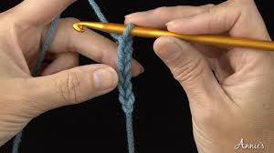
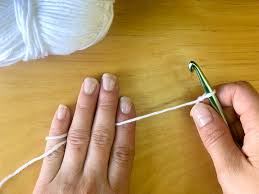
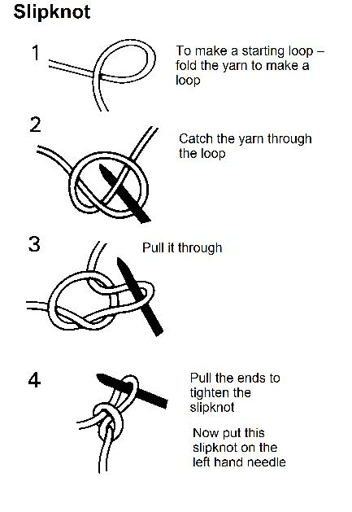
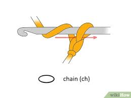

This is the start of a wonderful journey
Here is our compiled list of stitches and yarn/hook holding. Each set of instructions comes with detailed steps on that spesific stitch and a photo to help you see how it is completed.


Setting up your tension by learning how to hold the hook and yarn
Everyone crochets in a way that makes them comfortable. If that means holding your yarn from over your shoulder or under your pinky then that’s just how you’ll do it. That being said there’s no specific way for anyone to hold their yarn, but in the photo example is the basic way many people like to hold it. As for the Hook, many people hold it like a pencil or some hold it like the photo here, but same with the yarn, just hold it in a way that doesn’t make you uncomfortable or sore.

Slipknot
There are some different methods to get your beginning slipknot, but it's all the same process. Be sure to keep in mind if you are a knitter where often a slipknot counts as a stitch, in crochet that isn’t the case. The slipknot is just starting off your work. Refer to the photo to know how to make the slipknot.

Chain
Chain is the simplest of the stitches, and oftentimes how you will start off many of your projects. As shown in the photo, you will wrap the yarn around your hoop and pull it right through the first loop that was previously on your hook. And that’s it! You’ve got your first chain, oftentimes, a project will tell you right from the beginning to chain a certain amount then you’ll move right on to the second round of your project. Although sometimes the chain isnt considered the first row just one of the first steps.
Slip Stitch
Slip stitches aren't used too often, mostly to join rounds of crochet together to make them more even. As this picture shows, you will insert the hook into a stitch, yarn over and immediately pull it through the first loop on the hook.
Double Crochet
Now here is where things get a bit more complicated, double crochet is a very common stitch used in blankets and many other kinds of projects. Make sure to pay close attention to the photo for this one, you will start by yarning over and insert the hook into a stitch, yarn over the hook, pull the yarn through the stitch. You should have three loops on your hook. Yarn over and pull through two loops on your hook, yarn over and pull through the last two loops on hook. And you're done!
Half Double Crochet
Half double crochet is basically double crochet, minus a step. You'll yarn over, insert the hook into the stitch, pull up a loop and pull through all the loops on your hook.